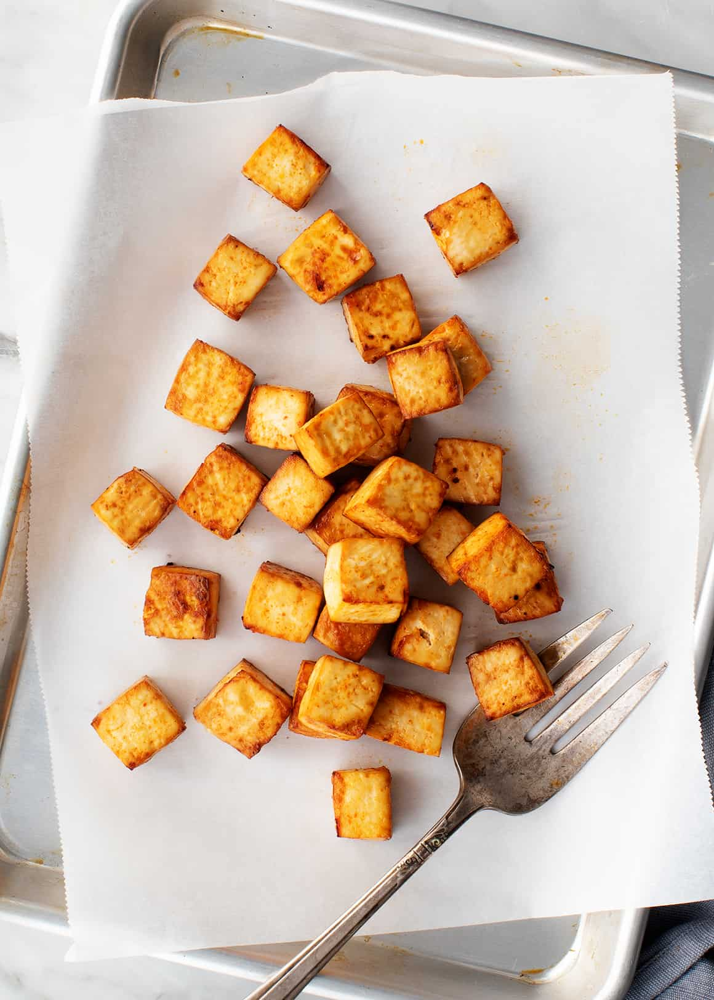

Simple Tofu Recipe
Description

This is a recipe that shows the basics of cooking tofu. For extra
guidance, you can access the recipe here:
How to Cook Tofu
Ingredients
- 14 ounces extra-firm tofu, patted dry and cubed
- ½ tablespoon extra-virgin olive oil
- 2 tablespoons tamari
- ½ teaspoon sriracha
- 1 tablespoon cornstarch, optional
Instructions
-
Preheat the oven to 425°F and line a baking sheet with parchment paper.
-
Toss the cubed tofu with the olive oil, tamari, and sriracha. For extra
crispy tofu, sprinkle with the cornstarch and gently toss to coat.
-
Spread the tofu evenly onto the baking sheet. Bake 20 to 25 minutes or
until browned around the edges. Remove and serve warm.